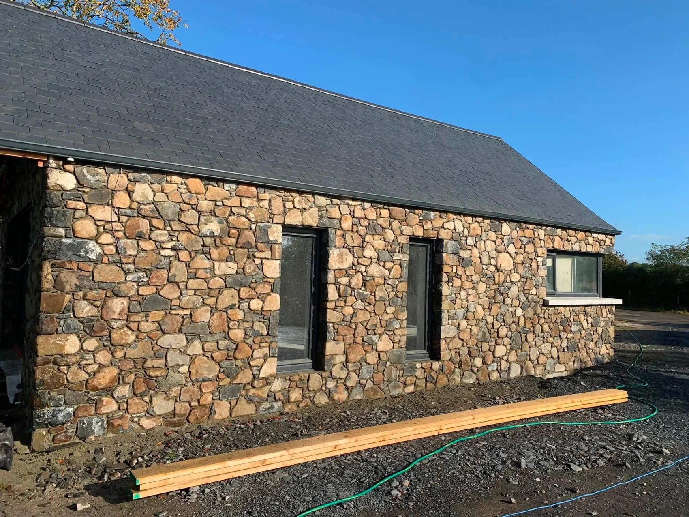
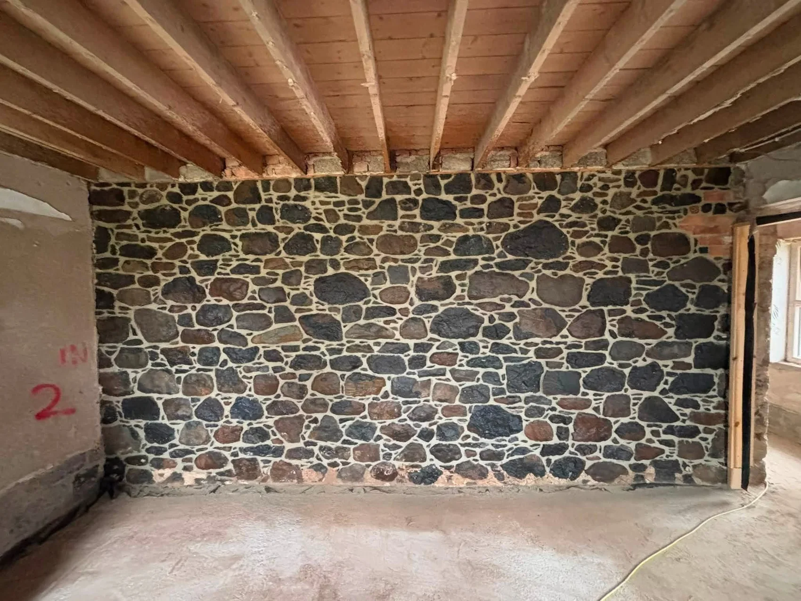
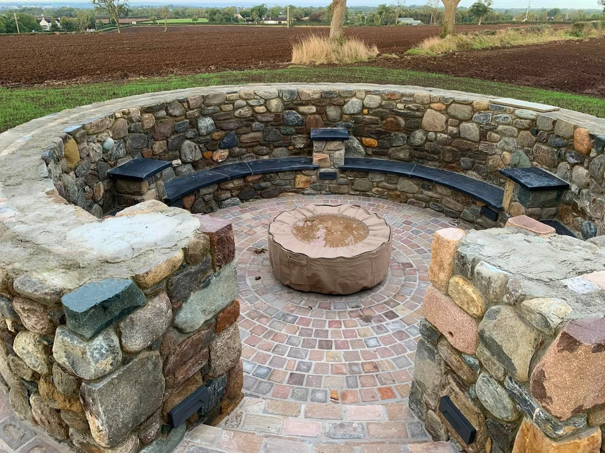

01
Stone building restoration
Restore the character of existing stone buildings with work that respects the original masonry.
Explore stone building restoration →
MJB STONEMASONRY · LURGAN · IRELAND NORTH & SOUTH
Stone building restoration, new build stonework and natural stone cladding. Based in Lurgan, working across Ireland, north and south.
Request a quote ↓BUILD WITH PRECISION
MJB Stonemasonry is based in Lurgan and works across Ireland, north and south. We restore existing stone buildings and build new stonework, using natural stone and cladding to suit the property and budget.
About MJB Stonemasonry →

OUR SERVICES
Explore the work we do and what to include when you ask for a quote.
01
Restore the character of existing stone buildings with work that respects the original masonry.
Explore stone building restoration →02
Bring natural texture to a new home or extension with stonework planned around openings, corners and adjoining finishes.
Explore new build stonework →03
Choose a stone finish for a facade, entrance or feature wall that suits the building and your budget.
Explore stone cladding →04
Define an entrance or garden space with masonry that works with the surrounding walls, paving and landscape.
Explore stone walls & gate piers →05
Use natural stone to add depth to a room, from an exposed feature wall to a fireplace surround.
Explore interior stonework →PROJECT GALLERY
Select a photo to see the full image.
View the full project gallery →
LURGAN · IRELAND NORTH & SOUTH
Share your town or county, the stonework you need and any access restrictions. Add photos in WhatsApp if they help explain the job.